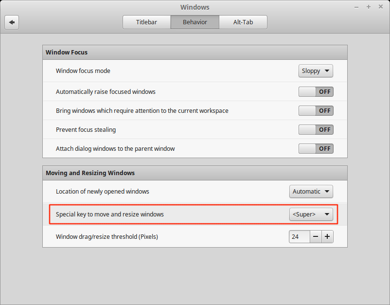

Blender Tips I Keep Forgetting¶
Reviewing Script Installation Instructions¶
Unzip (de-archive) the FigureShaders-master.zip file
Open Blender
To install the FigureShader script:
File -> User Preferences -> Add-Ons tab
At the bottom of this dialogue, click on Install From File…
Navigate to where you downloaded the zip file and select the make_shaders.zip file, within the unzipped folder FigureShaders folder. Click ‘Install from File…’
Browse your add-ons - click on ‘User’ under ‘Categories’ - and find the add-on. It is called ‘Material: Shaders for Imported Figures’. Tick the box on the right to activate it. (If this does not appear, check in the scripts/addons/ folder for the existence of a make_shaders folder, and that all these files are within that folder).
Keeping Blender Happy¶
The Alt-Right-Click Conundrum¶
From Blender StackExchange comes this solution. The problem: keyboard shortcuts on the OS override those in Blender. Two possible solutions are suggested:
Change the keyboard shortcuts on blender and avoid conflicting key combinations.
Reassign the keyboard shortcuts on the OS using key-combinations that are not used in blender.
The main disadvantage to the first solution (custom shortcuts) is that it’s hard to follow tutorials or other help. If you work with blender on other computers your shortcuts will not match. Resetting to factory defaults will also result in the loss of your custom settings, unless you save them to a file.
The way the author (cegaton) dealt with it is by re-assigning the Linux keyboard shortcuts so that Alt or Ctrl keys are not used by the OS, but let the OS use the super (windows) key instead.
In Linux Mint open the system settings and navigate to “Windows”.

and select the super key to move or resize windows:
The Viewer Node¶
To get one in the Material Node Editor, you have to activate the Node Wrangler add-on, then you can use Ctrl+Shift+LMB (clicking on the header of the node) to create a temporary Viewer Node.
Shit+RightClick+Drag to add a reroute.
ErinDale’s Knit Texture¶
YouTube:
https://www.youtube.com/watch?v=GBIXU9BlyXg
Shortcuts:
SHIFT+A: Add menu
SHIFT+D: Duplicate node
CTRL+SHIFT+D: Duplicate with connected inputs
CTRL+H: Hide unused node sockets
H: Minimise selected node
M: Mute selected node
CTRL+J: Frame selected nodes
CTRL+G: Group selected nodes
SHIFT+TAB: Turn on snapping
CTRL+SPACE: Maximise work area
G: Grab (especially useful when trying to move reroutes)
CTRL+X: Dissolve node
CTRL+Right Click: Cut noodle
SHIFT+Right Click: Add reroute
D+Left Click: Draw annotation
D+Right Click: Erase annotation
CTRL+Drag a slider to snap
SHIFT+Drag a slider for fine adjustments
Nodes Used
INPUT:
-Texture Coordinate
-Value
SHADER:
-Principled BSDF
TEXTURE:
-Image Texture
-Noise Texture
-Wave Texture
-White Noise
COLOUR:
-Hue/Saturation
-Invert
-MixRGB
+Mix
+Multiply
+Colour Burn
+Soft Light
+Linear Light
+Hue
VECTOR:
-Displacement
-Mapping
CONVERTER:
-Blackbody
-ColorRamp
-CombineXYZ
-Math
+Add
+Multiply
+Divide
+Pingpong
+Less Than
+Greater Than
-SeparateXYZ
-Vector Math
+Add
+Subtract
+Divide
+Length
+Scale
+Snap
+Fraction